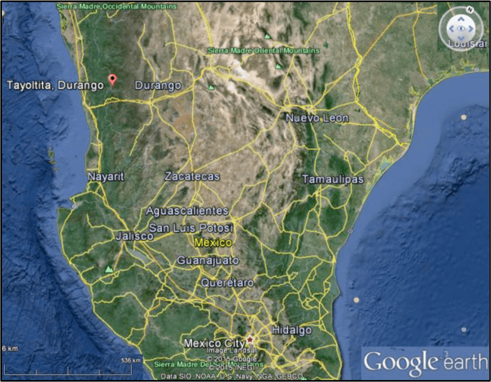
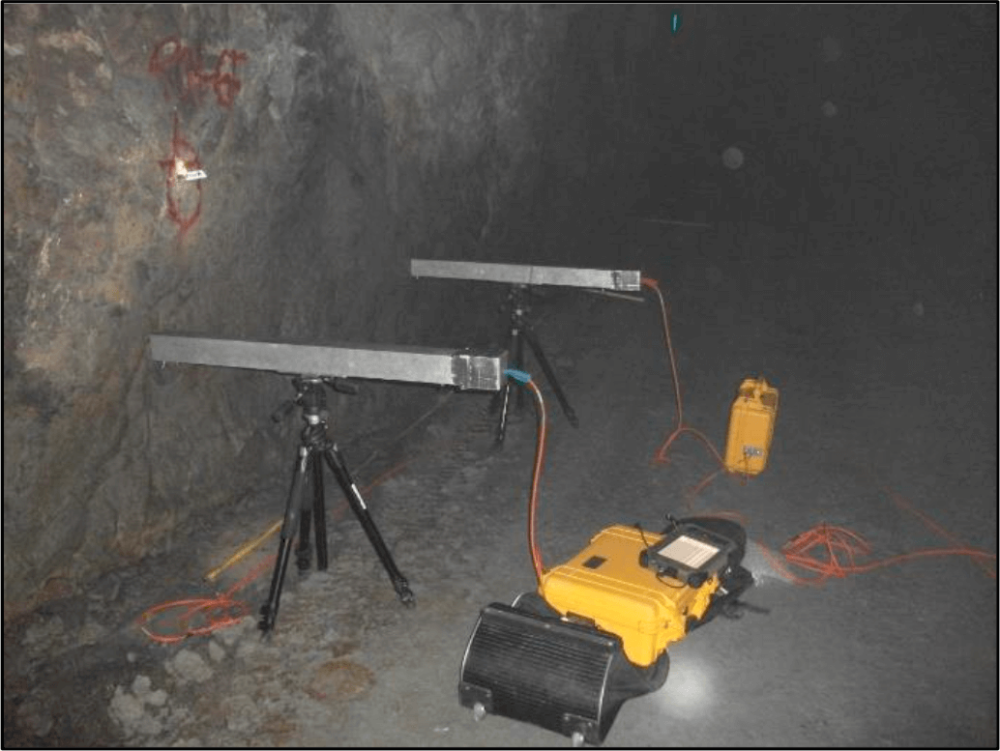
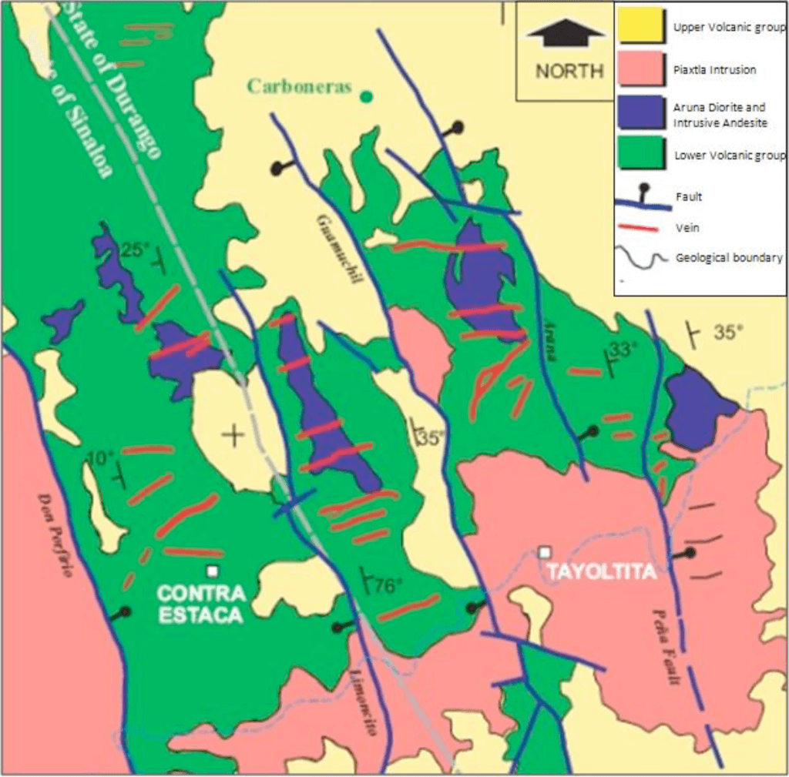
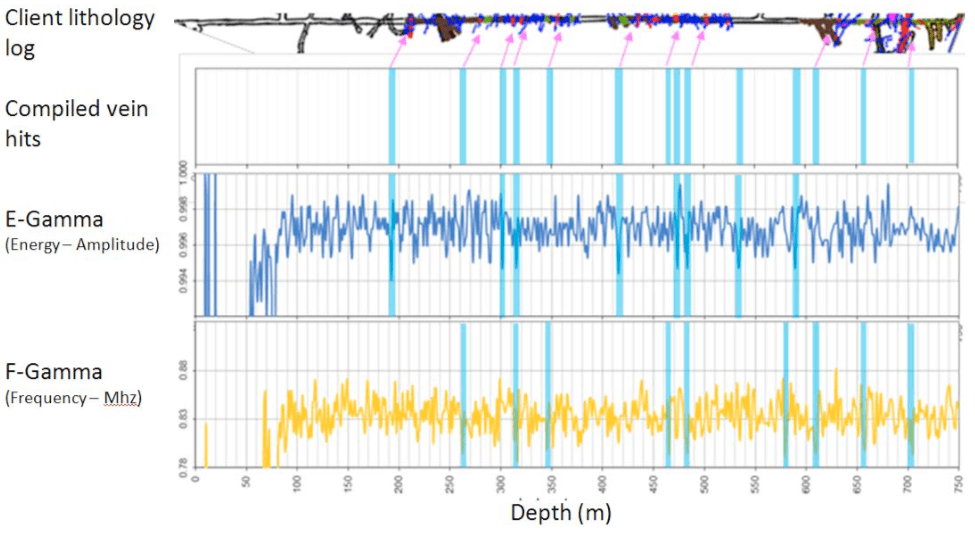
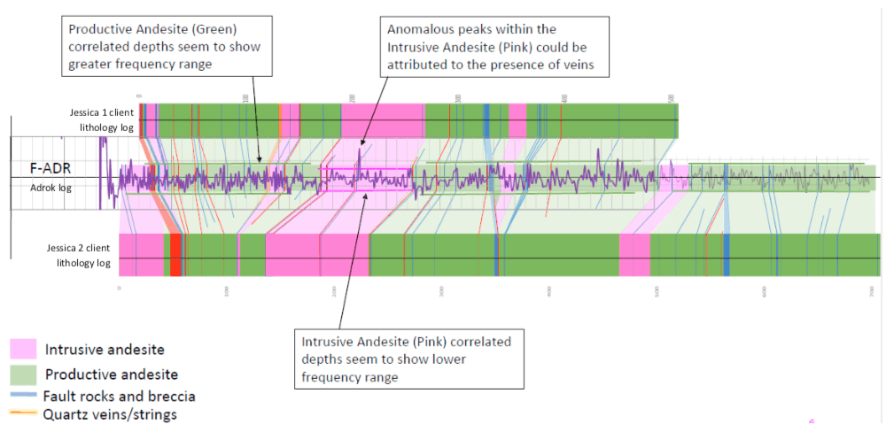

Geoscientific Survey Results for the use of Atomic Dieletric Resonance in Tayoltita, Mexico
Project aims
To reliably use Adrok’s measurements at Primero’s exploration sites to gain a better understanding of subsurface lithology specifically the presence of Gold bearing sulphide vein structures.
Exploration/Project challenges
This project experienced a number of challenges that were overcome by Adrok. The field survey component of this project was carried out in North West Mexico (Figure 1), in above and underground environments. Both conditions showcase the portability of Adroks scanner, where helicopters had to be used to ferry personnel too hard to reach locations in the mountainous jungle; whilst underground Adrok field crew successfully collected data in harsh mine conditions (Figure 2). Proving the ADR scanner is capable of performing in a wide variety of arduous conditions. Vein structures vary in thickness, but can be as thin as <1cm, being able to identify such thin veins is difficult, even for conventional drilling.
Geological context
The deposit is located within the central part of the Sierra Madre Occidental volcanic pile, containing rocks reflecting two separate periods of magmatism active between 45 to 100 million years ago and 23 to 32 million years ago. The precious metals bearing veins are contained within rhyolitic, andesitic and granodioritic rocks of the older magmatic episode1.
Regionally, the geological setting at San Dimas shows two major volcanic successions and a number of intrusive events. The Eocene aged Lower Volcanic Group is predominantly composed of andesitic and rhyollitic flows and tuffs. The Tertiary aged Upper volcanic Group is composed of a lower andesitic horizon capped by rhyolitic flows and tuff. Subsequent rhyolitic and basalt dykes intrude both the upper and lower volcanic groups.
 Figure 1: Location map of Tayoltita, Durango, Mexico.  Figure 2: ADR equipment set up for acquisition of a Stare scanThe deposits are high grade, silver-gold epithermal vein deposits formed from the final stages of igneous and hydrothermal activity in two different vein systems. The first formed set of veins strikes east-west while the second strikes north-northeast. The veins vary in width from a fraction of a centimetre to fifteen metres, but average 1.5m. The ore forming minerals are light coloured, medium to coarse grained quartz with intergrowths of base metal sulphides, pyrite, argentite, polybasite, native silver and electrum.
 Figure 3: Geological map of the field survey area2.Structurally, the area lies within an area of complex normal faulting along the western edge of the Sierra Madre Occidental (Figure 3). Compressive forces formed east-west and north- northeast tension gashes that where later cut by strike slip faults.
Adrok’s results
Adrok completed full processing and interpretation of 7 V-bores for Primero. Of this two were training sites and four were blind test holes for Adrok to prove the ability of the ADR scanner by predicting the results before their release from the client. This case study will highlight some of the results from this project as a method for identifying Gold bearing vein deposits.
From original comparison with the training data, it was established that both E-Gamma and F-Gamma logs (Harmonic results of processing the raw data collected by the ADR scanner) identified that troughs correlated well with the location of veins structures. An example of this can be found in the blind results for V-bore San Vicente (Figure 4) where the E-Gamma and F-Gamma logs show that low trough log responses correlate well with intrusive vein structures. In this example Adrok results successfully correlated with 12 out of 15 of the intrusive features (ore bearing Quartz breccias). A match of 80%, a further 10% of Adrok predictions occurred in areas where the client has no geological information and therefore cannot be discounted. The depth differences in figure 4, shown by the arrows on the client log, equate to around 10m of error; this can be attributed to the 300m of separation between the ADR V-bore and the client lithology log.
Identifying distinct lithological results proved difficult to resolve for this project. The vast majority of the local lithology used for training data, and indeed found throughout the field survey was volcanic Andesite. The client typically was only able to divide this into “Productive Andesite” and “Intrusive Andesite”, with the main difference being that all vein structures were found in the Productive Andesite. This meant that there existed little difference in chemical composition between the two types of Andesite, with the main difference coming in the form of the number of intrusive vein structures. However Adroks F-ADR tool was able to pick out some subtle differences when identifying these two units (Figure 5). The above graphic highlights how Productive Andesite typically exhibits a greater frequency range in the FADR log compared with the Intrusive Andesite.
This is likely due to the combination of faulting and veining structures present in the Productive Andesite, interacting with the ADR signal. The more homogenous Intrusive Andesite has a much lower frequency range showing how the ADR signal penetration interacts with similar rock type with little in the way of faulting or veining.
Benefits for client
During the course of this project Adrok has proven itself capable of deploying equipment to and from the field survey location, operating both above and below ground in arduous conditions. Successful data collection in these environments gives clients a reliable and cheaper alternative when planning future drilling exploration projects in remote locations.
The results produced for the client have showcased Adroks ability to detect intrusive vein structures and a possible lithological distinction between chemically similar types of Andesite. Both would assist the client in drastically reducing drilling costs and improving the accuracy of their probabilistic modelling of the subsurface, both for exploration and ongoing mine site development.
 Figure 4: E & F Gamma results for blind test V-bore San Vicente. In the client log, vein locations are indicated in red and highlighted by arrows.  Figure 5: F ADR results for blind test V-bore between Jessica 1 & 2. Drilled client lithology either side of Adrok interpreted results.